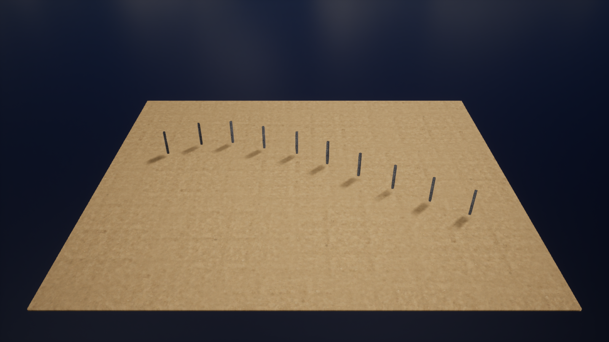
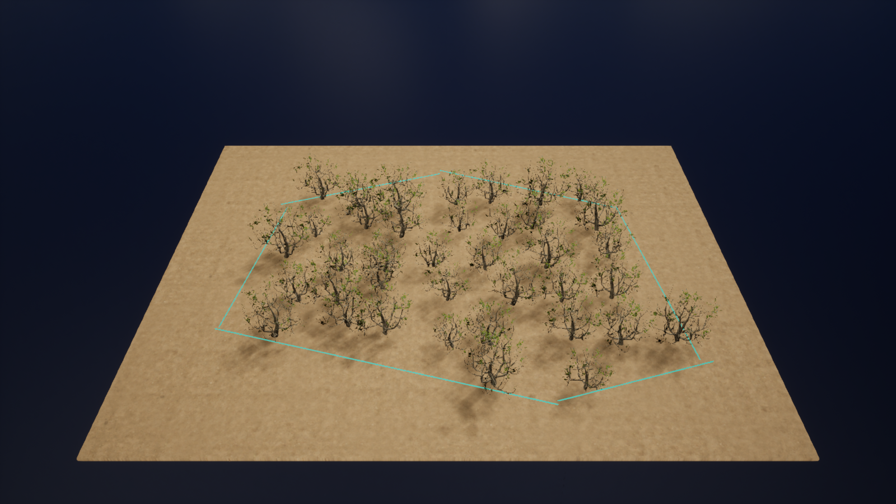
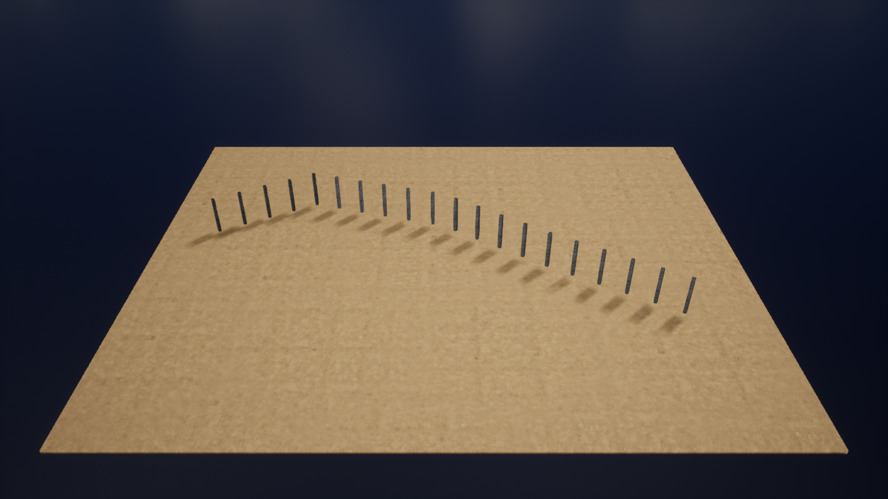
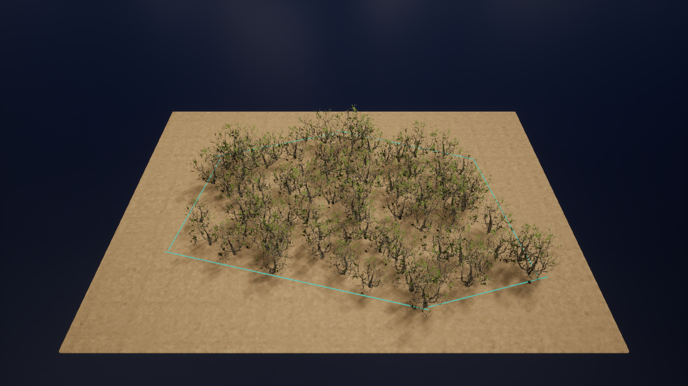

Week 11 · Lecture slidesCurrent Unreal project captures
Actual UE 5.7.4, DX12 Shader Model 6, using the reduced student assets. No remote-control cursor or overlay is included. The focused comparisons use fixed cameras; temporary display changes were not saved to maps.
Point markers are explicit cube visualizations. Bounds pruning is an approximation, not a full mesh collision test. The building is a rectangular, flat-roof example without designed interior circulation.
Modular building
Museum stations
Focused rule comparisons
Measured slope filtering
Forest seed comparison
Actual node and data views
Spline examples
Original stock-node graph. Open-curve posts and closed-region shrub scatter are separate branches. The boundary line is a generated guide; containment checks apply to shrub roots.

Open
Closed
Open-Dense
Closed-Dense